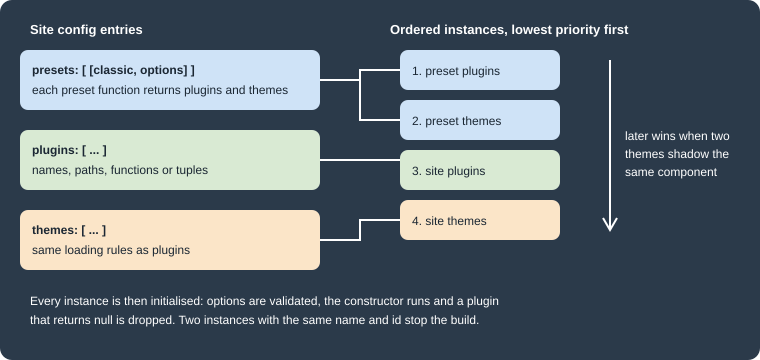
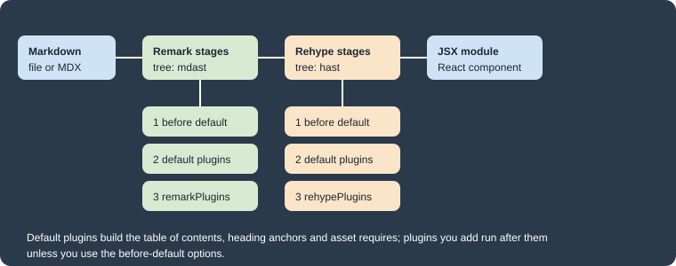

Plugins and Presets
|
This content was generated with the assistance of AI and should be verified against the official documentation before being relied on in production. |
This page was written against Docusaurus 3.10.2 and checked on 2026-10-26. The Docusaurus core provides no documentation
feature of its own: docs, blog, pages, sitemap, search and even the page layout come from plugins and themes. A preset is
a bundle of plugins and themes that you configure in one place, and the classic preset is what a new site uses. The
examples were run in a scratch site generated by create-docusaurus@3.10.2 (classic template, TypeScript, React 19) that
documents Pocket Units, a tiny units-conversion library written in Python and C#.
What plugins, themes and presets are
A plugin is a function that Docusaurus calls with the site context and the options you wrote, and that returns an object
of lifecycle methods. Those methods load content, create routes and data files, change the bundler configuration, inject
HTML tags or extend the command line. The three official content plugins illustrate the idea: the docs plugin turns the
docs/ folder into routes, the blog plugin does the same for blog/ and the pages plugin for src/pages. If no plugin
is installed the site has no routes at all.
A theme is loaded exactly like a plugin and has the same lifecycle methods. The differences are in purpose and order. A
theme supplies the React components that render the data plugins load, usually through a src/theme directory exposed
with getThemePath, and themes are initialised after plugins so that they can override a plugin’s default theme
components. In the classic setup @docusaurus/theme-classic provides the layout, the docs and blog components and the
navbar, while the content plugins provide only data and routes.
A preset is a function with the same shape as a plugin constructor, but instead of lifecycle methods it returns
{plugins, themes}: two lists of plugin configurations in the format the site config accepts. It exists so that plugins
and themes meant to work together are installed and configured as one unit.
The following figure shows how Docusaurus turns the three config entries into one ordered list.

Figure: the order of plugin instances. Plugins from presets come first, then themes from presets, then the plugins entry
of the site config and finally its themes entry. This order decides which theme wins when two of them provide the same
component, so the site’s own themes have the highest priority and preset plugins the lowest. The ordering is taken from
the loader in @docusaurus/core 3.10.2.
Registering plugins and themes
A plugin is usually an npm package. You install it with a pinned version and add it to the plugins array of
docusaurus.config.ts.
npm install --save-exact docusaurus-plugin-name@1.2.3Source: Docusaurus docs: Using Plugins
The plugins array accepts several forms. The docusaurus-plugin-name package above is a placeholder: substitute the
real name and version of the plugin you install.
import type {Config} from '@docusaurus/types';
import localPlugin from './plugins/local-plugin';
const config: Config = {
title: 'Pocket Units',
url: 'https://units.example.com',
baseUrl: '/',
plugins: [
// 1. A package name, resolved through the shorthand rules below
'@docusaurus/plugin-debug',
// 2. A package with options: a tuple of name and options object
['@docusaurus/plugin-sitemap', {changefreq: 'weekly'}],
// 3. A path to a local module, absolute or relative to the config file
'./plugins/other-local-plugin',
// 4. An imported function, with or without options
[localPlugin, {greeting: 'hello'}],
// 5. An inline function
async function inlinePlugin(context, options) {
return {name: 'inline-plugin'};
},
],
themes: ['@docusaurus/theme-classic'],
};
export default config;This listing shows the accepted forms and is not a complete project: localPlugin and ./plugins/other-local-plugin are
placeholders and the configuration was not built as one piece. The individual forms were all exercised in the Pocket Units
site described below. The options object of the second form is the same object that the plugin constructor receives as
its second argument, after the plugin’s own validation.
The themes array uses the same forms. From the point of view of the user the two arrays are interchangeable when you
install and configure a module. The nuance is the loading order shown above, and that the shorthand rules differ between
the two arrays.
Module shorthands
When the entry is a string (or a tuple whose first item is a string) Docusaurus resolves the name by trying three module
names in order and loading the first one it finds. moduleType is plugin, theme or preset, depending on which
config field holds the entry.
| Attempt | Example for content-docs in plugins |
|---|---|
the name as written |
|
|
|
|
|
A scoped name is split into scope and name at the first slash. A bare scope such as @my-company resolves only to
@my-company/docusaurus-plugin; a name such as @my-company/awesome tries @my-company/awesome and then
@my-company/docusaurus-plugin-awesome. The reference notes that Docusaurus permits more naming freedom than ESLint or
Babel, so a shorthand can resolve to a package you did not expect. Use the full package name when it matters, and put
themes in themes and plugins in plugins so that the right shorthand rule applies. The shorthand step runs only for
string entries: a function or an imported module is used as is.
When a name cannot be resolved the build stops with a message that lists the candidates it tried. In the scratch site a
plugin given as the directory ./plugins/pocket-units-catalog, which held an index.ts file, produced this error:
Error: Docusaurus was unable to resolve the "./plugins/pocket-units-catalog" plugin. Make sure one of the following packages are installed:
- ./plugins/pocket-units-catalog
- @docusaurus/plugin-./plugins/pocket-units-catalog
- docusaurus-plugin-./plugins/pocket-units-catalogA string path is resolved like require.resolve, so a directory needs an index.js, or a package.json pointing at a
file that exists. In that run an index.ts was not found. Importing the TypeScript module in the config file, as in the
Pocket Units example below, avoided the problem.
Plugin types and the debug panel
The plugin guide distinguishes four kinds of plugin: package (an installed npm package), project (a local file path),
local (a function written in the config file) and synthetic (a plugin Docusaurus creates internally; it does not
appear in the metadata). The debug plugin’s metadata panel at /__docusaurus/debug/metadata lists the installed plugins
during development, and client code can read the plugin versions with useDocusaurusContext().siteMetadata.pluginVersions.
Multiple instances and plugin IDs
All the official content plugins support several instances, for example two docs folders or two blogs. Each instance
needs a unique id. When you omit it the ID is default, and at most one instance of a given plugin can be the default
one. A preset normally already contains a default docs instance, so an extra docs plugin must get an ID. In the scratch
site, adding ['@docusaurus/plugin-content-docs', {path: 'api-docs', routeBasePath: 'api'}] next to the classic preset
stopped the build with this message:
Error: Plugin "docusaurus-plugin-content-docs" is used 2 times with ID "default".
To use the same plugin multiple times on a Docusaurus site, you need to assign a unique ID to each plugin instance.
The plugin ID is "default" by default. It's possible that the preset you are using already includes a plugin instance, in which case you either want to disable the plugin in the preset (to use a single instance), or assign another ID to your extra plugin instance (to use multiple instances).Adding id: 'api' and sidebarPath: false to the extra instance fixed it, and the build then wrote the second docs
site under build/api/. Docs versioning and the multi-instance docs setup are covered in
Versioning and
Docs and front matter.
The official plugins
The official plugins fall into content plugins, which load data and create pages, and behavior plugins, which add a feature. The lists below are from the plugin overview of Docusaurus 3.10.
| Group | Plugins |
|---|---|
Content |
|
Behavior |
|
The Google Analytics plugin (Universal Analytics) is marked deprecated in the using-plugins page. Plugins that are not in
the preset, such as the PWA, client redirects and ideal image plugins, are installed separately and added to plugins
with their options. For the search plugins and the OpenAPI plugin see
Search and OpenAPI docs.
Presets
A preset is installed and registered like a plugin, in the presets array, and may be given as a name, a tuple with
options, or a path to a local file. The classic preset is the one a new site gets from create-docusaurus.
The classic preset
@docusaurus/preset-classic bundles the classic theme, the Algolia search theme and the plugins listed in the table. The
loading rules in the third column come from reading the preset’s source in node_modules of the scratch site.
| Preset option | Module it configures | When it is enabled |
|---|---|---|
|
|
always |
none (reads |
|
only when |
|
|
unless set to |
|
|
unless set to |
|
|
unless set to |
|
|
when |
|
|
in a production build (or when |
|
|
unless set to |
|
|
only when you give an object |
|
|
only when you give an object |
|
|
only when you give an object |
none (reads |
|
only when that future flag is enabled |
Two consequences are worth knowing. The sitemap plugin writes sitemap.xml only in a production build, which is why a
development server has no sitemap. And the scaffold’s future.v4: true turns on the cascade layers plugin, which is
absent from the preset list of the documentation page. The preset rejects keys it does not know. In the scratch site an
extra option named sitemapp stopped the build with:
Error: Unrecognized keys sitemapp found in preset-classic configuration. The allowed keys are debug, docs, blog, pages, sitemap, theme, googleAnalytics, gtag, and googleTagManager. Check the documentation: https://docusaurus.io/docs/using-plugins#docusauruspreset-classic for more information on how to configure individual plugins.The Algolia search theme is loaded only when themeConfig.algolia exists, so a site without it does not run the search
theme. In the 3.10.2 scratch site @docusaurus/theme-search-algolia declares @docsearch/react as ^3.9.0 || ^4.3.2 and
npm installed 4.7.1, so the DocSearch used under the hood is version 4 of the React package. Search is covered in
Search.
Configuring the preset
The classic preset hands each option to the plugin or theme named in the table. This is the preset configuration of the Pocket Units site. It sends the documentation plugin a sidebar file and, further down, the remark and rehype plugins that the next section builds.
import type {Config} from '@docusaurus/types';
import type * as Preset from '@docusaurus/preset-classic';
const config: Config = {
title: 'Pocket Units',
url: 'https://units.example.com',
baseUrl: '/',
presets: [
[
'classic',
{
docs: {
sidebarPath: './sidebars.ts',
},
blog: {
showReadingTime: true,
},
theme: {
customCss: './src/css/custom.css',
},
} satisfies Preset.Options,
],
],
};
export default config;Disabling a part of the preset is done with false, for example blog: false for a docs-only site. See
Blog and pages for the blog options and
SEO and static assets for the sitemap.
Writing a preset
A preset module exports a function with the signature of a plugin constructor and returns plugins and themes. It can
give each plugin an ID itself, which spares the user from naming them. The example in the Docusaurus guide registers three
docs instances.
export default function preset(context, opts = {}) {
return {
themes: [['@docusaurus/theme-classic', opts.theme]],
plugins: [
['@docusaurus/plugin-content-docs', {...opts.docs1, id: 'docs1'}],
['@docusaurus/plugin-content-docs', {...opts.docs2, id: 'docs2'}],
['@docusaurus/plugin-content-docs', {...opts.docs3, id: 'docs3'}],
],
};
}The preset is then registered with its options, which is equivalent to listing the plugins and themes by hand.
export default {
presets: [
[
'./src/presets/docusaurus-preset-multi-docs.js',
{
theme: {},
docs1: {path: 'docs', routeBasePath: 'docs'},
docs2: {path: 'community', routeBasePath: 'community'},
docs3: {path: 'api-docs', routeBasePath: 'api'},
},
],
],
};These two listings adapt the official example (the theme is the classic one and the paths are Pocket Units folders) and were not executed. Because a preset can pass one option to several plugins, it is also the place for options that must stay consistent across plugins.
Remark and rehype plugins
Docusaurus compiles Markdown through MDX, which first parses the file to a Markdown syntax tree (mdast) and later turns it
into an HTML syntax tree (hast) before emitting JSX. MDX plugins come in two forms that match those two trees: remark
plugins transform the Markdown tree, rehype plugins transform the HTML tree. The admonition syntax is itself a remark
plugin, and so are the default plugins that build the table of contents, add heading anchors and turn images and links into
require() calls.

Figure: where the plugin options run. In each stage the before-default plugins run first, then the default plugins of
Docusaurus, then the plugins you list in remarkPlugins or rehypePlugins.
The three content plugins (docs, blog and pages) each take their own remarkPlugins and rehypePlugins options, and the
docs page of the Docusaurus guide documents beforeDefaultRemarkPlugins and beforeDefaultRehypePlugins for putting a
plugin ahead of the defaults. Plugins you attach to the docs plugin do not run on blog posts: in the scratch site the same
remark plugin had to be added to blog as well before a blog post was transformed. The three plugins also list
recmaPlugins among their options. Recma plugins work on the JavaScript tree and were not exercised here, and the
before-default options were exercised on the docs plugin only.
Remark and rehype plugins are usually ESM-only packages. Use an ES module config file, which is what the TypeScript config
of a new site is, or load the plugin with a dynamic import() inside an async config function in a CommonJS file. Install
any package that you import in your own plugin code as a direct dependency, otherwise the build only works while a
transitive dependency happens to be hoisted. The scratch site installed unist-util-visit@5.0.0 for that reason.
Using an existing plugin
Install the plugin and list it in the options of the plugin that should use it. A plugin with its own options is written as a tuple of plugin and options. The math plugins are the standard example.
npm install --save-exact remark-math@6 rehype-katex@7Source: Docusaurus docs: Math Equations
import type {Config} from '@docusaurus/types';
import remarkMath from 'remark-math';
import rehypeKatex from 'rehype-katex';
const config: Config = {
title: 'Pocket Units',
url: 'https://units.example.com',
baseUrl: '/',
presets: [
[
'classic',
{
docs: {
remarkPlugins: [remarkMath],
rehypePlugins: [[rehypeKatex, {strict: false}]],
},
},
],
],
stylesheets: [
{
href: 'https://cdn.jsdelivr.net/npm/katex@0.16.9/dist/katex.min.css',
type: 'text/css',
},
],
};
export default config;Source: Docusaurus docs: MDX Plugins
This listing combines the two official math and plugin pages and was not executed here, because the math example is
covered in Diagrams and math, where the KaTeX stylesheet is
explained. The major versions of remark-math and rehype-katex are the ones the math page names for Docusaurus 3, so replace them
with exact versions you have tested, and the KaTeX version in the stylesheet URL is an example.
Writing a remark plugin
A remark or rehype plugin is a function that receives its options and returns a transformer, a function that receives the
tree and changes it in place. The second argument of the transformer is a vfile, whose path field is the file being
compiled. The Pocket Units plugin below finds inline code such as 42.195 km and appends the converted value, so that the
documentation shows both unit systems.
import {visit} from 'unist-util-visit';
const METRES = {m: 1, km: 1000, ft: 0.3048, mi: 1609.344};
const PATTERN = /^(\d+(?:\.\d+)?) (m|km|ft|mi)$/;
/**
* Remark plugin: turns an inline code span such as `10 km` into
* "10 km (6.214 mi)" so documentation shows both unit systems.
*/
export default function remarkPocketUnits(options = {}) {
const target = options.target ?? 'mi';
return function transformer(tree) {
visit(tree, 'inlineCode', (node) => {
const match = PATTERN.exec(node.value);
if (!match || match[2] === target) {
return;
}
const converted = (Number(match[1]) * METRES[match[2]]) / METRES[target];
node.value = `${node.value} (${converted.toFixed(3)} ${target})`;
});
};
}A rehype plugin has the same shape and works on elements. This one adds a class to every table so that the theme can style it:
import {visit} from 'unist-util-visit';
/**
* Rehype plugin: adds a CSS class to every table so the theme can style it.
*/
export default function rehypeTableClass(options = {}) {
const className = options.className ?? 'pocket-table';
return function transformer(tree) {
visit(tree, 'element', (node) => {
if (node.tagName === 'table') {
node.properties = node.properties ?? {};
node.properties.className = [className];
}
});
};
}Both are imported in the config and attached to the docs plugin and, for the remark plugin, to the blog plugin:
import type {Config} from '@docusaurus/types';
import type * as Preset from '@docusaurus/preset-classic';
import remarkPocketUnits from './src/remark/pocket-units.mjs';
import rehypeTableClass from './src/rehype/table-class.mjs';
const config: Config = {
title: 'Pocket Units',
url: 'https://units.example.com',
baseUrl: '/',
presets: [
[
'classic',
{
docs: {
sidebarPath: './sidebars.ts',
remarkPlugins: [[remarkPocketUnits, {target: 'mi'}]],
rehypePlugins: [[rehypeTableClass, {className: 'pocket-table'}]],
},
blog: {
showReadingTime: true,
remarkPlugins: [[remarkPocketUnits, {target: 'mi'}]],
},
} satisfies Preset.Options,
],
],
};
export default config;These plugins ran in the Pocket Units scratch site (docusaurus build succeeded). The docs page text A marathon is
42.195 km long came out as <code>42.195 km (26.219 mi)</code>, the table in the same page was rendered as
<table class=pocket-table>, and a blog post with 1 km in inline code was converted only after the blog plugin got the
same remark plugin.
The TypeScript config imports the .mjs files without type declarations. In a strict TypeScript project, add a
declaration file or write the plugins in TypeScript.
Plugin order and the before-default options
Docusaurus runs its own plugins first, so by the time your remark plugin runs, the table of contents has already been
computed and images and links have become require() calls. A plugin that changes heading text therefore does not change
the table of contents. The options beforeDefaultRemarkPlugins and beforeDefaultRehypePlugins put your plugin ahead of
the defaults. A small plugin that prefixes every level-2 heading with the text "Section N." (a number, a period and a space) showed the difference in the scratch
site:
import {visit} from 'unist-util-visit';
export default function sectionPrefix() {
return function transformer(tree) {
let number = 1;
visit(tree, 'heading', (node) => {
if (node.depth === 2 && node.children.length > 0) {
node.children.unshift({type: 'text', value: `Section ${number}. `});
number++;
}
});
};
}| Option used for the plugin | Heading text on the page | Table of contents entries |
|---|---|---|
|
|
|
|
the same headings |
|
The vfile argument of the transformer gives the path of the Markdown file being processed, which is how the default image plugin resolves relative image paths.
Writing a Docusaurus plugin
A Docusaurus plugin is a module whose default export is a constructor, (context, options) => Plugin | Promise<Plugin>. The
named exports are static methods that Docusaurus calls before it constructs the plugin. The constructor can also return
null, which tells Docusaurus to drop the plugin (a way for a plugin to disable itself depending on the context), but
returning undefined is an error that names the plugin.
The context is the same object for all plugins and has the fields siteDir, generatedFilesDir, siteConfig,
outDir and baseUrl. The options are the second item of the tuple the user wrote, after validateOptions has
normalised them. The returned object must have a name, which is the namespace for the plugin’s cached data, so make it
unique if you write a local plugin.
Lifecycle APIs
During a build the plugins are loaded in parallel to fetch their own content and render it to routes. The following diagram shows the order of the main lifecycle methods and where their results go.
static"] --> B["constructor
context, options"] B --> C["loadContent
read data"] C --> D["contentLoaded
createData, addRoute, setGlobalData"] D --> E["configureWebpack
injectHtmlTags
getClientModules"] E --> F["bundle and render"] F --> G["postBuild"]
Diagram: the build-time order. contentLoaded receives what loadContent
returned, and postBuild runs after a production build only. The bundler, HTML and client-module hooks contribute to the
output of the bundle and render step.
The table lists the methods with the behavior described in the reference.
| Method | What it does |
|---|---|
|
Fetches data from the file system, a remote API or a CMS. Its return value is passed to |
|
Turns the content into routes and data. |
|
Changes the bundler configuration. An object return value is merged into the final config with |
|
Receives and must return the PostCSS options used for the client bundle. |
|
Runs when a production build finishes. |
|
Returns |
|
Returns paths of modules that are imported into the client bundle before React renders. They may export
|
|
Paths the development server watches so the plugin lifecycles reload when they change. Use it for files read on the server side. |
|
Registers a command on the Docusaurus CLI. The |
|
Directory of the theme components, used by the swizzle command and by the bundler. The TypeScript path is only for swizzling TypeScript sources and is not resolved by the bundler. |
|
Hooks for the i18n system; see Internationalization. |
The mental-model listing in the reference also shows a postStart hook marked as a to-do, so do not rely on it.
The static methods are validateOptions({options, validate}), validateThemeConfig({themeConfig, validate}) and
getSwizzleComponentList(). validate accepts a Joi schema; the reference recommends importing Joi from
@docusaurus/utils-validation so that Joi versions do not get mixed. A plugin that does not use Joi can instead throw an
error for invalid options and return the options when they are valid.
Source: Docusaurus docs: Lifecycle APIs
Source: Docusaurus docs: Static methods
A complete plugin for Pocket Units
The plugin below reads a JSON list of units, creates a page at /units that shows them, shares the unit count through
global data, injects a meta tag, writes a summary file after the build, adds an alias to the bundler configuration, watches
the data file, registers a client module and adds the command units:list. It validates its options with Joi.
[
{"name": "metre", "symbol": "m", "metres": 1},
{"name": "kilometre", "symbol": "km", "metres": 1000},
{"name": "foot", "symbol": "ft", "metres": 0.3048},
{"name": "mile", "symbol": "mi", "metres": 1609.344}
]import path from 'node:path';
import fs from 'node:fs/promises';
import {Joi} from '@docusaurus/utils-validation';
import type {
LoadContext,
OptionValidationContext,
Plugin,
} from '@docusaurus/types';
export type Options = {
routePath: string;
unitsFile: string;
};
type Unit = {name: string; symbol: string; metres: number};
export default async function pocketUnitsCatalog(
context: LoadContext,
rawOptions: unknown,
): Promise<Plugin<unknown>> {
// validateOptions has already filled in the defaults
const options = rawOptions as Options;
const unitsPath = path.resolve(context.siteDir, options.unitsFile);
return {
name: 'pocket-units-catalog',
async loadContent() {
return JSON.parse(await fs.readFile(unitsPath, 'utf8')) as Unit[];
},
async contentLoaded({content, actions}) {
const units = content as Unit[];
const {createData, addRoute, setGlobalData} = actions;
const unitsJson = await createData('units.json', JSON.stringify(units));
setGlobalData({count: units.length});
addRoute({
path: options.routePath,
component: '@site/src/components/UnitsCatalog/index.tsx',
modules: {units: unitsJson},
exact: true,
});
},
getPathsToWatch() {
return [unitsPath];
},
configureWebpack() {
return {
resolve: {
alias: {'@pocket-units': path.resolve(context.siteDir, 'src/components')},
},
};
},
injectHtmlTags() {
return {
headTags: [
{
tagName: 'meta',
attributes: {name: 'generator-library', content: 'pocket-units'},
},
],
};
},
getClientModules() {
return [path.resolve(__dirname, 'client.ts')];
},
async postBuild({outDir, routesPaths}) {
const units = JSON.parse(await fs.readFile(unitsPath, 'utf8')) as Unit[];
await fs.writeFile(
path.join(outDir, 'units-summary.json'),
JSON.stringify({units: units.length, routes: routesPaths.length}),
);
console.log(`[pocket-units-catalog] wrote units-summary.json (${units.length} units)`);
},
extendCli(cli) {
cli
.command('units:list')
.description('Print the Pocket Units catalog')
.action(async () => {
const units = JSON.parse(await fs.readFile(unitsPath, 'utf8')) as Unit[];
for (const u of units) {
console.log(`${u.symbol}\t${u.name}\t${u.metres}`);
}
});
},
};
}
export function validateOptions({
options,
validate,
}: OptionValidationContext<Partial<Options> | undefined, Options>): Options {
const schema = Joi.object<Options>({
routePath: Joi.string().pattern(/^\//).default('/units'),
unitsFile: Joi.string().default('data/units.json'),
});
return validate(schema, options ?? {});
}The client module and the page component are small:
import type {Location} from 'history';
export function onRouteDidUpdate({
location,
previousLocation,
}: {
location: Location;
previousLocation: Location | null;
}): void {
if (location.pathname !== previousLocation?.pathname) {
console.log(`[pocket-units-catalog] route: ${location.pathname}`);
}
}import type {ReactNode} from 'react';
import Layout from '@theme/Layout';
import {usePluginData} from '@docusaurus/useGlobalData';
type Unit = {name: string; symbol: string; metres: number};
export default function UnitsCatalog({units}: {units: Unit[]}): ReactNode {
const {count} = usePluginData('pocket-units-catalog') as {count: number};
return (
<Layout title="Units">
<main className="container margin-vert--lg">
<h1>Units ({count})</h1>
<ul>
{units.map((u) => (
<li key={u.symbol}>
{u.name} ({u.symbol}): {u.metres} m
</li>
))}
</ul>
</main>
</Layout>
);
}The plugin is imported and registered in the config. Importing the TypeScript module, rather than giving a directory path, avoids the resolution error shown earlier.
import type {Config} from '@docusaurus/types';
import pocketUnitsCatalog from './plugins/pocket-units-catalog';
const config: Config = {
title: 'Pocket Units',
url: 'https://units.example.com',
baseUrl: '/',
plugins: [[pocketUnitsCatalog, {routePath: '/units'}]],
};
export default config;Source: Docusaurus docs: Lifecycle APIs
The listings come from the Docusaurus reference examples for createData, addRoute, setGlobalData, postBuild,
injectHtmlTags and extendCli, combined into one plugin. This is what the scratch site produced:
npx docusaurus build[INFO] [en] Creating an optimized production build...
[pocket-units-catalog] wrote units-summary.json (4 units)
[SUCCESS] Generated static files in "build".build/units-summary.json contained {"units":4,"routes":8}, build/units/index.html existed and contained the meta tag
generator-library with the content pocket-units, and npx tsc reported no type errors. The custom command worked too:
npx docusaurus units:listm metre 1
km kilometre 1000
ft foot 0.3048
mi mile 1609.344A wrong option is stopped before the plugin runs. With routePath: 'units' (no leading slash) the build failed with
"routePath" with value "units" fails to match the required pattern: /^\//. The validation ran although the plugin was
imported into the config instead of being given as a path. The reference describes validateOptions as a static method
of the plugin module, so for a plugin you publish, load it by package name or module path rather than relying on this.
The client module was bundled by the build, but its onRouteDidUpdate output was not observed because no browser session
was run for this page, and the units page component was checked in the generated HTML only.
Client module lifecycles
Client modules are imported into the bundle before React renders, either from a plugin through getClientModules or from
the site config through the clientModules field. They run during server-side rendering too, so guard access to browser
globals with ExecutionEnvironment.canUseDOM. A client module can export onRouteUpdate, called while the next route’s
assets are preloaded and which may return a cleanup callback, and onRouteDidUpdate, called once the new page is in the
DOM. Both receive location and previousLocation (which is null on the first screen) and both fire on the first
render in the browser, but not on the server. The lifecycles are imperative; for state-driven UI the guide suggests
swizzling a component instead, which is covered in
Styling, theming and swizzling.
Pitfalls and version notes
-
Remark and rehype plugins that ship as ESM-only packages need an ESM config or a dynamic
import(). The TypeScript config of the scratch site imported them without trouble. -
A plugin path string is resolved by Node, so a directory needs an
index.js; anindex.tsalone was not found in the scratch site. Import the TypeScript module in the config file instead. -
Two instances of the same plugin need different IDs, and the preset already contains a default docs, blog and pages instance. Disable the preset’s instance with
docs: falseor give the second one anid. -
Options of the preset are checked: a misspelled key stops the build with a message that lists the allowed keys.
-
Remark and rehype plugins attached to the docs plugin do not run on blog posts or pages. Add them to each plugin that needs them.
-
Default plugins run before yours. Use
beforeDefaultRemarkPluginswhen the table of contents or anchors must see your change. -
configureWebpackis named after webpack, but Docusaurus 3.10 also offers a faster Rspack-based build behind thefutureflags. The alias returned by the Pocket Units plugin worked in the scratch site, which enablesfuture.v4and depends on@docusaurus/faster; prefer settings that both bundlers understand. See Docusaurus Faster and v4 readiness. The reference also warns that the signature will change. -
Global data from
setGlobalDatais loaded on every page, so keep it small and prefercreateDatawith route modules for page-specific data. -
The sitemap plugin runs only in production builds.
-
The Google Analytics plugin is deprecated; use
gtagorgoogleTagManagerin the preset. The Algolia search theme loads only whenthemeConfig.algoliais set. -
For the CLI commands that run these lifecycles, see CLI and TypeScript. For the whole section, see Docusaurus.